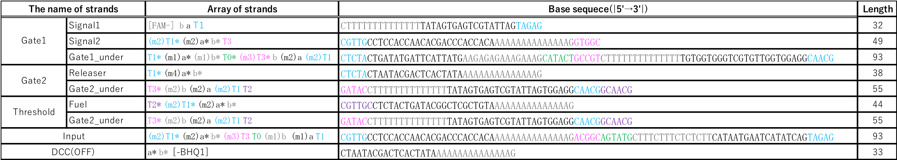

Dry Experiment
Material & Method
Simulation conditions
We set the binding rate constant (kf) based on toehold length as follows.
If toehold_length ≤ 6
kf = 5.0×10n-1[M-1s-1]
else
kf = 3.0×106[M-1s-1]
Where
n:toehold_length
Type of strands
We designed the strands shown in Figures 1~xx.
Additionally, we designed DNA sequences using NUPACK. The DNA sequences are shown below in Table 1.
NUPACK is able to design the DNA sequences and evaluate their secondary structures at a room temperature.

Method of experiment
We will introduce the ways to introduce DNA circuits into cells here.
The ways are three types. They are a chemical method called transfection, a physical method called electroporation
and an biological method called virus vector.
They have each advantahes and each disadvantages.
Accordingly we should take a selectiton along the purpose of experimants.
In this time, we used the electroporation method whitch is physical method.
The electroporation method makes a hole in a cell membrane temporarily using electric pulse
and introduce DNA or some materials into the cell through the hole.
In additon, this method needs to destroy a cell wall of E. coli in advance.
A reason we chose this method is it is known that its efficiency of introducing gene is higher than other methods’
and we are able to apply for various cells by using it.